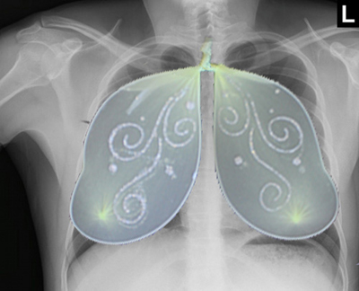
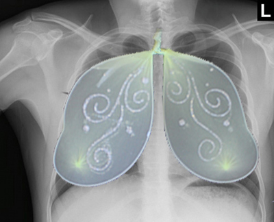

Food Waste PSA Poster
Part of this project took spanned the length of the entire semester. We worked on part of it on and off. At the beginning of the semester we were each assigned an object and given the task of photoshoping it into different images to create fun ideas and stories.
I was assigned toy fairy wings. We made several images in the beginning of the semester a few more in the middle, and in the end we created posters using the objects we were all assigned.
It was interesting to see the challenge that came with each object, and how they were used in each persons work. Some ideas came easily and sometimes I sat for a long time wondering what more I could possibly make with a pair of fairy wings.
Elements and Thining modes
This was really an interesting article. We’ve been using seven creative strategies throughout the semester and In some aspects this article helped to explain why they work.
I like to understand why things work. It is a lot more effective if we understand what is going on.
Ideation
Learning about the three modes of thinking in an ideation session was awesome. The first step is divergent thinking. This is where you come up with as many ideas as you can. The key is quantity.
“Ideation relies on the interplay between a range of cognitive processes and mental modes or mindsets. Achieving the best results requires that you purposefully select only the relevant modes and apply them, switch between them and mix them to produce unconventional recipes from the same set of inputs.”
After that we move onto the second which is emergent thinking emergent thinking is where you start to refine your ideas and make connections that make sense. In a way emergent thinking is where the good ideas emerge.
The final step of the three is convergent thinking. This is where you finalize the ideas by cutting out the ones that wont work or just aren’t as good as the others. You rationally narrow down your ideas and decide what options do what you need the best.
Combinations
Juxtposition
Isolation
Metaphor or Simile
Change of Context
Physical-Shape Simularitiy
 

Material Change-Inversion-Swap-Focus
Stimulus & Environment
For me finding an environment I can work in can be very difficult. In my apartment there is always a lot of noisy people. Sometimes I jokingly refer to it as the shenanigans apartment. It’s always nice and I can see a big difference when I have an environment I can focus and work in.
This semester has really proved to me that your environment and the things you see, do, and hear really make a difference in your ability to do things.
My Thoughts
An interesting aspect of this project was that we had already done a lot of looking at things for inspiration. This made some things easier and in some ways it made it harder to open your mind back up again.
Sketching
Sketching was a very fun part of this project, but it was difficult to use the ideas I came up with to make a good ad poster.
A lot of the ideas told good stories, but couldn’t be connected to anything. There were also a ton of sketches that just didn’t work at all. I’ve included some that in my opinion work the best to the right.
More Thoughts
I ran out of time to do more drafts of the invasive species poster. I Did spend a lot of time trying to get the butterfly on top of the building to look better, but with finals and all the other classes I have to deal with I wasn’t able to find the time to get it the way I wanted.
I was happy about how the food waste poster turned out. I would have spent a little more time Getting the Butterfly to look better if I had the time, but all things considered I like the way it turned out.
A lot of people really liked them, so if nothing else people are able to understand them and they enjoy the concepts.
Posters
Creating the posters was really fun. Usually I don’t enjoy doing posters that much, but after doing a few in just about every design class they are starting to grow on me.
Using the random object made it fun. It was a neat and interesting challenge, but still definitely a challenge.
I learned a lot. Like I said I struggled through a lot of it, but that is because there was a lot for me to learn. I loved the class and each of the projects. I feel more exited about graphic design when I look back on each thing I’ve done.